|
|
 TABLE OF CONTENTS The 2001 Feast Menu with Recipes The 2002 Feast Menu with Recipes The 2003 Feast Menu
with Recipes The 2004 Feast Menu
with Recipes The 2005 Feast Menu
with Recipes The 2006 Feast Menu
with Recipes ARTICLES ON THE FEASTS: Fairest of them all -
Renaissance activities are under way Medieval
eats - Chef returns for fourth command performance at Renaissance Feast About.com:
2005
Alabama Renaissance Faire A
feast to remember - Diners treated to sights, sounds, taste of medieval
era Limited number of tickets available for royal meal Hear, hear: FEAST GALLERIES: Steven Reilly's Photographs of the 2001 Feast Thomas Wallace's
Photographs of
the 2001 Feast 2004
Feast Gallery 2005
Feast Gallery 2006
Feast Gallery THE RENAISSANCE FAIRE: Articles on the
Renaissance Faire ALABAMA REN FAIRE LINKS: Official Alabama Renaissance Faire Website SEE ALSO: Gode Cookery Table of Contents: RECIPES & COOKERY: Recipes from A Newe Boke of Olde Cokery Incredible Foods, Solteties, & Entremets Glossary of Medieval Cooking Terms ARTICLES ON COOKERY: Regimen Sanitatis Salernitanum An Elizabethan Dinner Conversation Coqz Heaumez - A Helmeted Cock FEASTS & DINNERS: IMAGES: RESOURCES: Gode Cookery Awards and Site Reviews RECIPES MAY BE FOUND IN: Recipes from A Newe Boke of Olde Cokery Incredible Foods, Solteties, & Entremets Coqz Heaumez - A Helmeted Cock
© 1997-2013 PLEASE VISIT: The Gode
Cookery Bookshop |
About the 2011 Feast Here is our
proposed menu for 2011, a feast of recipes from medieval Catalonia.
About the 2010 Feast This year was a
"Feast of Turkish Delights," with an authentic traditional Turkish
repast. 
About the 2009 Feast This year, we were proud to be host an authentic German feast, in honor of Queen Rebecca Linam. 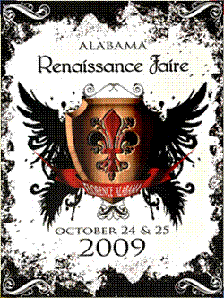 The 2009 Feast Menu Recipes inspired by Daz buoch von guoter spise, Germany, 14th c.
About the 2008 Feast This year our
feast on Oct. 18 was a repast of nautical & New World foods, in
honor of our Pirate King, His Majesty King Gregory
Bowling. 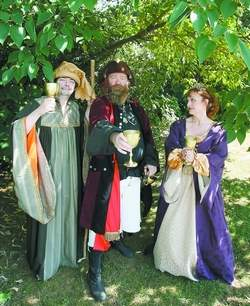 His
Majest,y King Gregory, with retinue This special menu of Pirate food was
based on research by Troy Lamey: Articles Fair city of Florence prepares for Renaissance Faire Photographs
This year's Feast was held on October 20th. The theme for the menu was Italian, with a strong Middle Eastern influence, in honor of the reigning monarch, Queen Ostarra. 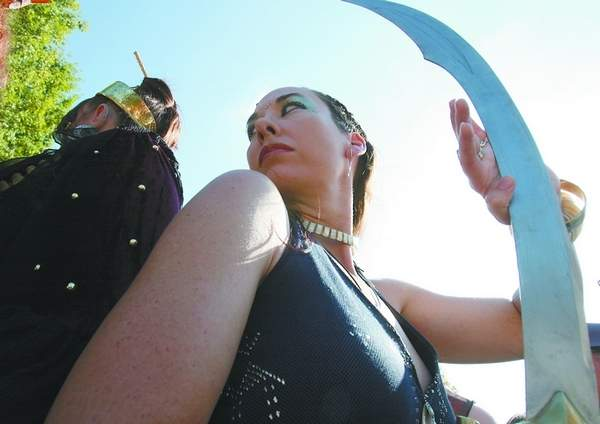 The monarch of 2007, Queen Ostarra The 2007 Feast Menu Articles Limited number of tickets available for royal meal Photographs YouTube videos of the kitchen & feast
The Feast for this year was in honor of the reigning monarch, Queen Freya Igraine Greywolf: A FEAST for the VIKING QUEEN 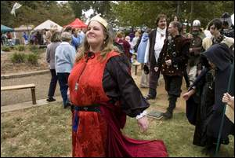 Queen Freya Igraine Greywolf at the Alabama
Rennaissance Faire, 2005 This unique menu
was entirely based on research on Frisian food & culture by Jenn
Strobel: Articles Photographs A slideshow of photographs from the kitchen & feast
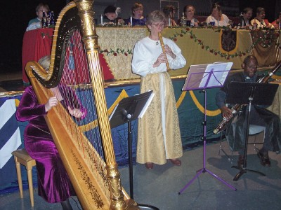 This year
we presented an Italian Renaissance Feast in honor
of the
Four Seasons: Festività
Delle Quattro Stagioni Menu researched
& composed by Lisa Holcomb-Blair of Mobile, AL. Articles About.com:
2005
Alabama Renaissance Faire A feast to remember - Diners treated to sights, sounds, taste of medieval era The NEW Official Alabama
Renaissance Faire Website Photographs A slideshow of photographs from
the kitchen
& feast 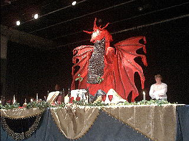 The
2004 Feast Menu with Recipes Articles Medieval
eats - Chef returns for fourth command performance at Renaissance Feast Photographs A slideshow of photographs
from the kitchen
& feast
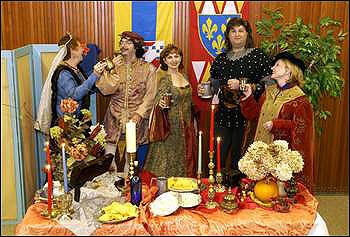 Members of the Feast Committee shortly before the 2003 feast The 2003 Feast Menu with Recipes Articles Fairest of them all -
Renaissance activities are under way
About the 2002 Feast: "Everyone is in agreement that this year was our best ever; the general consensus is that the food was excellent, served hot and right on time. I particularly enjoyed the stewed beef. Great work!" - Lee Freeman, member of the Renaissance Faire Roundtable. The 2002 Feast Menu with Recipes
About the 2001 Feast: The 2001 Feast Menu with Recipes Photographs Feast Gallery I: Steven Reilly's Photographs of the 2001 Feast Feast Gallery II: Thomas Wallace's
Photographs
of the 2001 Feast
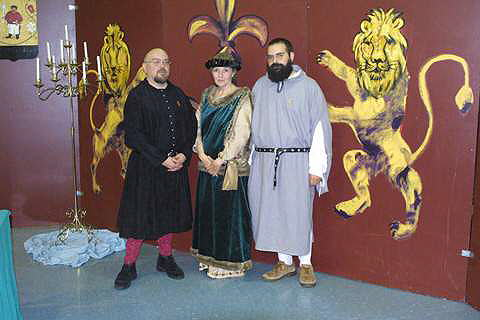 The Gode Cookery crew, shortly after the end of the 2001
feast: tired
but happy! 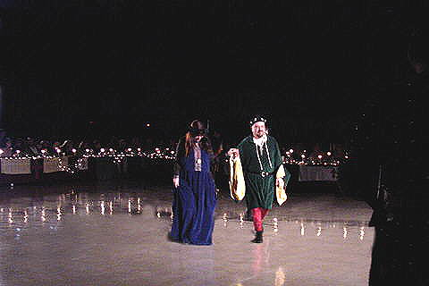 Jim & Glenda at the 2002 feast.
About the Alabama Renaissance Faire The Faire is held in downtown Florence at Wilson Park, on
the corner of Tuscaloosa Street and Wood Avenue. Florence, Alabama, is
located 120 miles south of Nashville, 145 miles east of Memphis, and
125 miles north of Birmingham. ARTICLES on the RENAISSANCE FAIRE Links: Official Alabama
Renaissance Faire Website | Renaissance
Faire
Information on the Feast
& Faire from Florence-Lauderdale Tourism at: 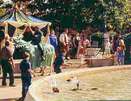 Begun
in 1987, the official Alabama Renaissance Faire has developed into a
major tourist event in northwest Alabama. For the past four years it
has been named one of the top 20 events in the Southeast by the
Southeast Tourist Society in Atlanta, giving it recognition by more
than 800 media outlets throughout the region.
Held
in Wilson Park (renamed Fountain-on-the-Green for the two days of the
Faire), this unusual event draws 35,000 - 40,000 people each year to
its site in downtown Florence, Alabama. It is always held on the fourth
Saturday and Sunday in October, taking advantage of the balmy weather
and the gorgeous fall foliage in the park.
As
the Faire has grown, so have the other events which surround it during
Renaissance Month as October has been officially designated by the
local government.
Among
the Medieval/Renaissance-related events held during October are musical
programs, public lectures, dramatic performances, art exhibits and
dance programs. All of these are of the highest quality, and they set
the stage perfectly for the Faire.
One
of the major events of the month is an authentic Medieval/Renaissance
Feast. It is held on Saturday evening a week before the Faire in a very
baronial hall and features food and entertainment of the period. People
who attend the Feast are encouraged to follow the customs of the era by
bringing their own tablecloth, candelabra and eating utensils. (This
was routinely done during Medieval times because the nobility liked to
flaunt its wealth by displaying its gold plates and its candlesticks of
brass, silver or gold.)
Two
free costume-making workshops are held on the first two Saturdays in
October at the local Kennedy-Douglass Art Center. People of all ages
are invited to bring fabric, and the rest (measuring, cutting, sewing)
is done by men and women connected with the Faire. A person literally
walks away with a simple costume in hand which he/she can embellish
with jewelry, belts, etc. That a large percentage of people attend the
Faire in costume is directly attributable to these workshops.
Capitalizing
on the fact that the Faire is scheduled during the school year, those
in charge of planning have found creative ways to incorporate it into
the schools. Art contests for young children, sonnetwriting contests
for adolescents, and a poster-design contest for adults are outgrowths
of the monthlong celebration. October is a great time to be in
Florence, Alabama—especially the fourth weekend!
Information on the Faire from
the Alabama Department of Archives & History at: 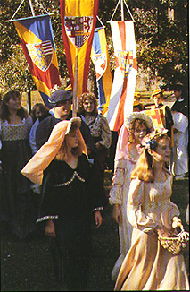 In
October of 1987, the first Renaissance Month was observed in Florence,
Alabama. Every fourth weekend in October a Renaissance Faire takes
place as a two-day event. Florence is named for Florence, Italy, the
founding city of the Renaissance movement in Europe during the 14th
century.
The Renaissance Faire covers the period of time from the 12th through the 16th centuries. Authentic costumes, arts and crafts, and food are all a part of the Faire. Visitors can take part in medieval games and hear musicians playing authentic instruments. Artisans and merchants offer coins of the realm, hand-thrown pottery, jewelry, dried flower wreaths, and many other delights. Magicians, mirthmakers and minstrels wander about in period attire. The Alabama Renaissance Faire is held in downtown Florence at Wilson Park - on the corner of Tuscaloosa Street and Wood Avenue. Florence, Alabama is located 120 miles south of Nashville; 145 miles east of Memphis; and 125 miles north of Birmingham. The Florence Renaissance Faire became the official state faire in 1988 by Act no.88-43. FOR
FUTHER INFORMATION CONTACT:
Chamber
of Commerce of the Shoals
Tourism Division 104 South Pine Street Florence, Alabama 35630 (205)764-4661
|


 Alabama
Renaissance
Faire
Alabama
Renaissance
Faire
 Gode Cookery
Gode Cookery